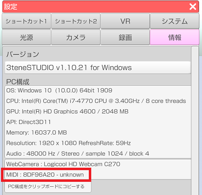

MIDI 機器を使ってショートカットを利用します。
キーボードと違って 3tene のウインドウが非アクティブでも
ショートカット機能が使えます。
ノートオンが発生する MIDI 機器であれば動作可能と思われます。
MIDIコントローラや鍵盤楽器系がお勧めです。
USB タイプの MIDI 機器は初回接続時にドライバがインストールされると
3tene で特に設定しなくても使用可能になります。
Windows のデバイスマネージャーでは
「サウンド、ビデオ、およびゲーム コントローラー」に登録されるようです。
3tene を起動すると MIDI 機器の確保を行い、使用可能になります。
設定ウインドウの「情報」タブで認識状態を確認できます。
※機器名称が判別できず「unknown」と表示される場合がありますが
正常動作となります。

3tene を起動すると MIDI 機器を確保するので
他のソフトから対象となる MIDI 機器は使用できなくなります。
※他のソフトで MIDI 機器を確保した状態で 3tene を起動した場合も
3tene では対象となる MIDI 機器が使用できなくなります。
3tene を終了すると確保した MIDI 機器は解放されるので
他のソフトから対象となる MIDI 機器は利用可能になります。
キーボードやゲームパッドと同様の設定方法になります。
ショートカットタブ を参照してください。